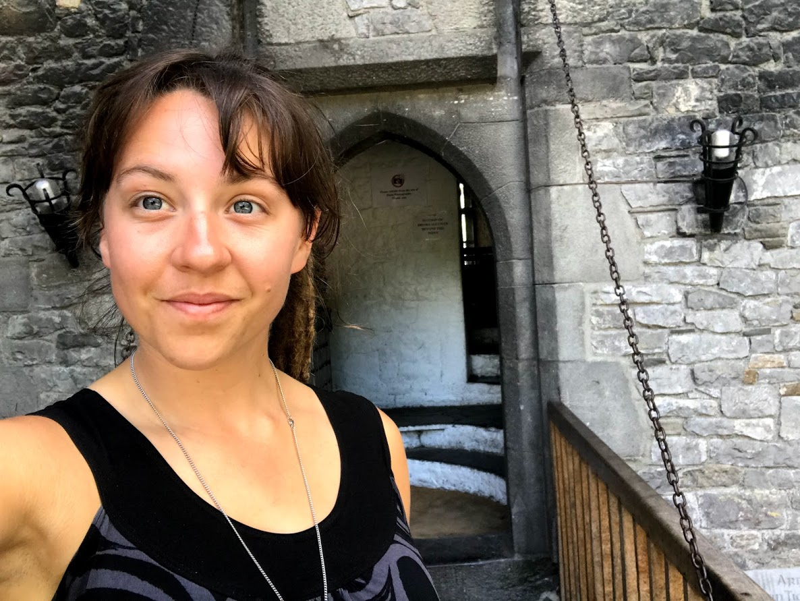

About me
Hi! I'm Madison, I'm currently working as an interpreter and living in Portland, OR. I have a fascination with human languages and understanding the systems in our brains that help us to interpret the world around us. This led me to discover coding, it's almost like being able to play with a language processing center to see if I can render what is in my mind onto the screen!
My background
I was born and raised in sunny California, spent most of my life in a small town between Los Angeles and Palm Springs. When I was 14 I developed an interest in learning American Sign Language, at the time my high school did not offer it, so I took classes at the local community college in the evenings after school.
In 2010 I graduated from Beaumont high school and went on to pursue my education at California State University-Northridge or CSUN for short. I graduated in 2014 with a BA in Linguistics and another BA in Deaf Studies with an emphasis on Interpretation.
After graduating from University I decided to move to Portland since being here I have interpreted in a variety of settings and learned how to be a business owner or sole proprietor.
I decided to take the plunge and learn coding for a few reasons; I wanted to build up new job skills, I wanted to be able to break into an industry that has become one of the greatest wealth creators in the world, and I wanted more options than interpreting.